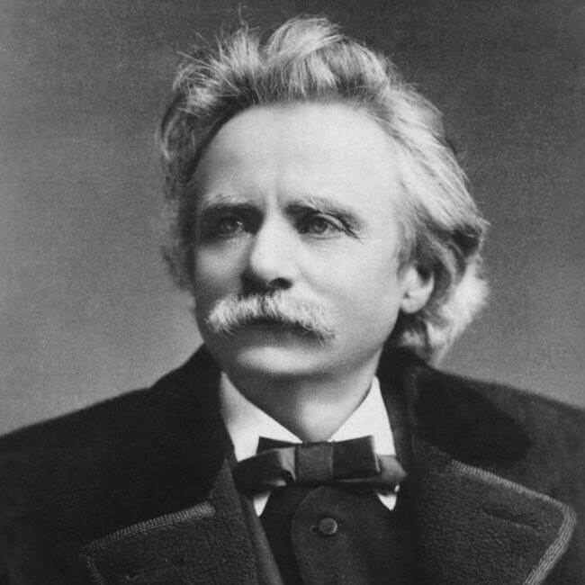
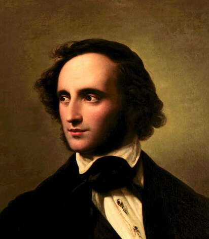
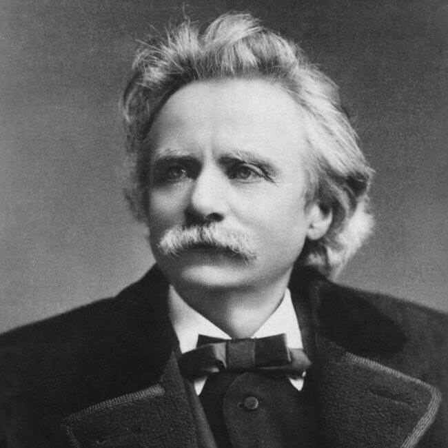
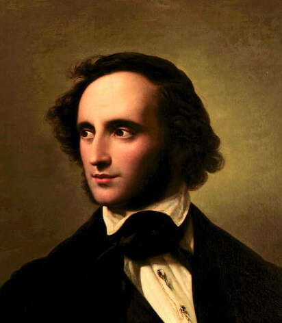
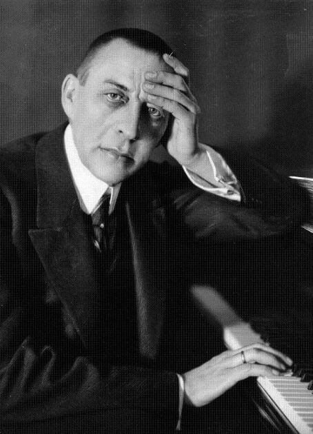
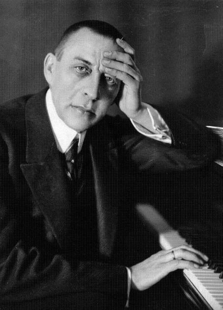
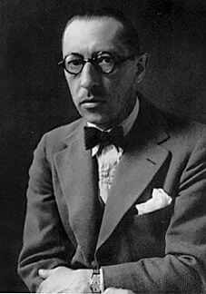
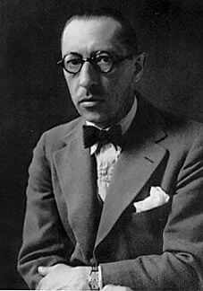

 



 



Compositores.
Los clásicos nunca mueren y las grandes composiciones musicales de todos los tiempos no dejan de interpretarse en las salas de conciertos de todo el mundo, lo que permite elaborar biografias de los compositores que más suenan en los principales auditorios, a pesar de que en muchos casos sus obras las compusieron hace más de uno o dos siglos, e incluso tres.